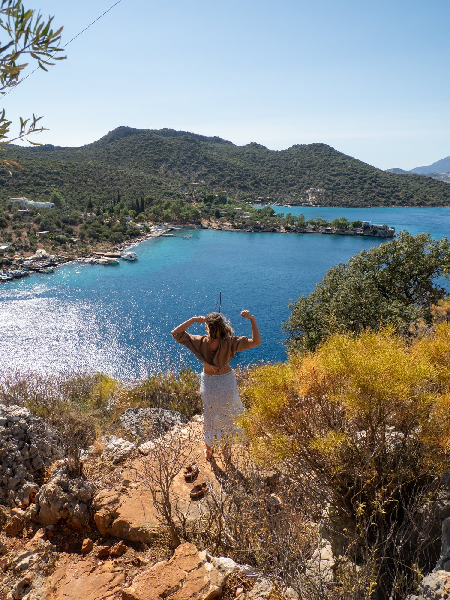
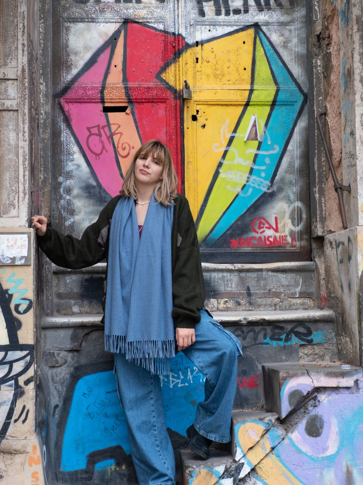

Breathwork therapy for
chronic protection
A 5-week online group program for chronic pain, anxiety, panic and all the ways your body has learned to protect you.

The program
When your nervous system gets stuck in protection, it can show up as pain that won't go away, anxiety that comes out of nowhere, panic that makes you afraid of your own body, and many other symptoms.
These do not mean that your body is broken. They are an intelligent response to your life, and to living in a collapsing world ruled by colonialism and capitalism.
This program uses breathwork therapy, somatic awareness and mind-body practices to help your body unlearn protection mechanisms that are no longer serving you. You'll leave with tools that are yours for life.
What is chronic protection?
Chronic protection is when your nervous system keeps protecting you long after the danger has passed.
At some point, your body learned it wasn't safe. Maybe it was one big thing, maybe it was years of small ones. It tensed, it stayed alert, it hurt, it got scared. Back then, that made sense. The problem is that it never got the message that it could stop.
Years later it can still be showing up as pain in your back, a racing heart at 3am, a stomach that's always on edge, or a tiredness no amount of sleep fixes.
And it's rarely just about you. Our bodies carry our own stories, but also what our families went through, and what it's like to live in a world built on colonialism and capitalism. Of course we're on guard.
The good news is that protection can be unlearned. I've seen it in my own body, and in the people I work with. With breath, attention and a lot of gentleness, your nervous system can start to believe it's safe to let go.
This program could be for you if…
- you live with chronic pain that scans and tests can't fully explain
- your anxiety or panic is with you throughout your day
- you've tried physio, medication, supplements, therapy and yoga, and you're still not free
- you feel the weight of the world's injustices in your body
- you want to understand your symptoms and go beyond just managing them
How this work is different
Your symptoms make sense.
Pain, anxiety and panic are often your body's way of protecting you. We look at them in the context of your whole life, including the systems and injustices you live within, and those your ancestors lived within.
You are the authority on your body.
My goal is not to fix you or make you dependent on me. I support you in reclaiming trust in your own body, so you won't need me for long.
Personal freedom is collective freedom.
When we reconnect with our bodies, the systems that thrive on our disconnection lose their grip. We do this work because we need everyone in their full aliveness for the world we are building.
The five weeks
Before we begin. You'll watch my free 50-minute class on mind-body medicine and receive resources on breathwork therapy and mind-body medicine, so you can learn the basics before our first session.
-
Week 1
Understanding your story and preparing for the breath.
We take time to hear from everyone and begin to understand how your nervous system has been protecting you. We start connecting to the breath and to sensation.
-
Week 2
Building safety.
We explore what safety feels like in your body and learn pendulation: gently moving between discomfort and ease, so we can practice staying with uncomfortable sensations.
-
Week 3
Being with sensation.
Using breathwork and pendulation, we turn toward physical sensations with curiosity instead of fear.
-
Week 4
Being with emotion.
We make space for the emotions underneath your symptoms, including the grief, anger and fear we carry about the world. We use the breath to stay with these emotions, so your nervous system can learn that it doesn't need to protect you from them.
-
Week 5
Coming home to yourself.
We bring it all together into a daily practice that's yours, and reflect on what it means to live freely in your body in an unjust world. You'll leave knowing what to do if your symptoms come back.
The details
Dates and times
Each group meets once a week for five weeks, with a maximum of 8 people per group.
-
EU groups, in English (choose one)
Saturdays, November 21 to December 19
12:00 Istanbul, 10:00 CET, 09:00 UKMondays, November 23 to December 21
21:00 Istanbul, 19:00 CET, 18:00 UK -
US group, in English
Sundays, November 22 to December 20
12:00 ET, 09:00 PT (20:00 Istanbul) -
Turkish group, in Turkish
Saturdays, November 21 to December 19
10:00 Istanbul
What's included
- Five live group sessions online (75 to 90 minutes)
- A breath first aid kit: simple practices that will stay with you for life
- Daily journaling practices
- Nervous system and somatic communication practices
- Recorded practices, which may include parts work, decolonial reflection, breathwork and meditation
Investment
€75 for the full five weeks.
Online
All sessions are online, so you can join from anywhere.
I also work 1:1. We can talk about it in the free intro call.
Is this right for you?
We'll start with a free intro call to talk about what you're experiencing and make sure this work is a good fit and safe for you.
"Thank you so much for being by my side through this process, Leyla. For a year I tried physiotherapy, doctors, medication, creams, whatever there was, and still I didn't have a single day without pain. Everything only gave temporary relief. At the moment I thought, 'please, let there finally be a real solution,' you came into my path, and that was my miracle. I hope you reach many more people like me and remind everyone that healing is first of all within us. If my pains have passed now, and if I understand myself and what my body is trying to say better, it's thanks to your support and compassion. Thank you so, so much."
About me
I found myself through this work many times.
At 12, I was diagnosed with advanced scoliosis. Doctors told me I'd either live in pain my whole life or have surgery to rearrange my spine, and I grew up afraid of my own body. In 2024, pain from my lower back down my leg left me barely able to walk for almost a year. Back home in Akyaka, on the Aegean coast, I found Dr. John Sarno's work, turned toward my pain instead of fighting it, and found my freedom. Now I walk alongside people on the same path.

Questions you might have
So… is this pain all in my head?
No. The pain is real and physical. With mind-body pain, it is the nervous system creating or amplifying the pain, rather than damage in the body. Whether that is part of what is happening for you is something we explore together, ideally after a doctor has ruled out anything serious.
Do you only work with chronic pain?
No. I work with chronic pain, anxiety, panic attacks and other symptoms that come from a nervous system stuck in protection. I call this chronic protection. Pain, anxiety and panic can look very different, but they often come from the same place: a body that learned it wasn't safe and hasn't yet learned it can let go.
Do I need perfect scans or a doctor's clearance first?
I recommend having a doctor rule out anything serious first. That peace of mind often supports the process. Breathwork isn't right for everyone, so before we start I ask about your health, and I adapt the practices to you or leave some out. You can read who breathwork isn't right for.
What if I have a real diagnosis, like herniated disc, scoliosis, arthritis, or IBS?
Mind-body work does not deny these findings, but research and experience show that many people with the same diagnoses live pain-free. What matters is the role your nervous system is playing in amplifying or even creating the symptoms.
How many sessions will it take?
The program is five live group sessions over five weeks, and the practices are yours to keep using after that. Some people feel a shift after one insight, and for others it takes months of steady practice after the program ends. Everyone's timing is different.
What if I don't get better?
This is one of the most common fears. This work requires persistence, and setbacks are part of the process. I'm confident in the tools, but your nervous system may resist at first. The good news: countless people around the world, myself included, have found freedom this way, and I believe you can too.
What can mind-body pain look like?
Mind-body pain can look like, or show up alongside, conditions such as herniated or bulging discs, scoliosis, arthritis or joint degeneration, fibromyalgia, chronic fatigue, irritable bowel syndrome and other gut issues, migraines or tension headaches, pelvic pain syndromes, carpal tunnel or repetitive strain injuries, autoimmune-like flare-ups, and many more.